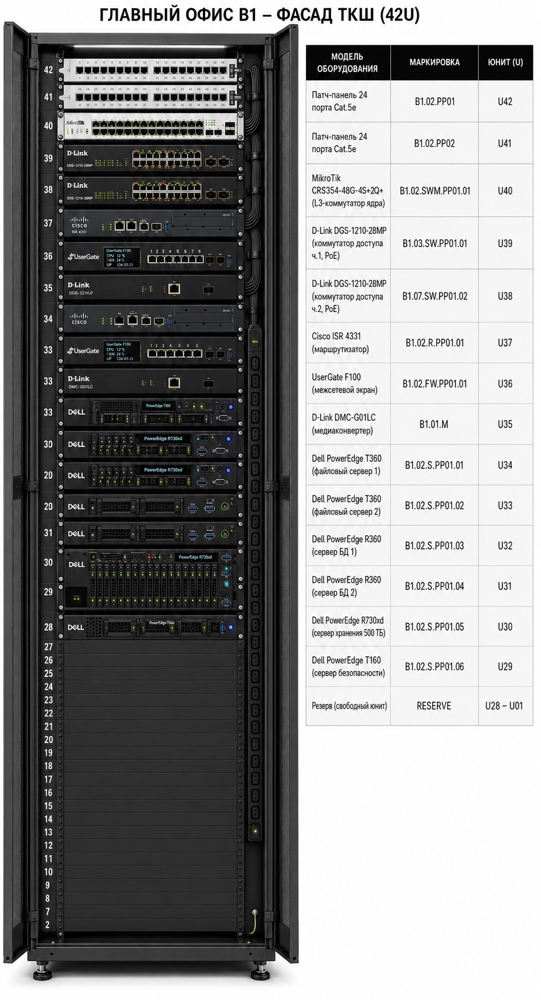

1 Проектная часть
Проектная часть посвящена разработке архитектуры структурированной кабельной сети офиса интернет-магазина. В разделе рассматриваются принципы построения сети, выбор активного и пассивного оборудования, организация кабельной системы, размещение оборудования в ТКШ, а также представлены схемы уровней L1, L2 и L3.
Сеть построена по иерархической трёхуровневой модели: ядро (Core), распределение (Distribution) и доступ (Access). Применяется сегментирование по VLAN с разделением трафика на серверный, пользовательский, CCTV и MGMT-сегменты, а также выделением DMZ для публичных сервисов.
Проект охватывает два независимых объекта: B1 (главное здание) и B2 (филиал). Каждый объект имеет собственный интернет-канал, межсетевой экран, коммутацию и серверную инфраструктуру. Межсетевое соединение между B1 и B2 не реализовано — каждое здание работает автономно. Внутри каждого объекта применяется единая система маркировки оборудования и кабельных линий.
В качестве активного оборудования выбраны управляемые коммутаторы серии D-Link, поддерживающие VLAN, STP, LACP и статическую маршрутизацию L3.
| Устройство | Модель | Назначение | Кол-во |
|---|---|---|---|
| Маршрутизатор | D-Link DSR-1000AC | WAN / Edge / VPN | 2 |
| Межсетевой экран | Cisco ASA 5505 | inside / outside / dmz | 2 |
| Ядро / L3-коммутатор | D-Link DGS-1210-28 | Core / inter-VLAN routing | 2 |
| Доступ (PoE) | D-Link DGS-1210-10P | CCTV, PoE-устройства | 2 |
| Доступ | D-Link DGS-1210-28 | Пользовательский сегмент | 2 |
| Сервер | Dell PowerEdge R550 | DHCP, DNS, NTP, FTP, HTTP | 4 |
| СХД | Synology HD6500 | Хранение данных | 1 |
Пассивная инфраструктура строится на базе кабеля UTP категории 5e (U/UTP Cat.5e, 4×2×0,52 мм). Для центрального узла используется напольный шкаф D-Link NFR-GLS 42U, для коммутаторов доступа — настенные шкафы серии NWR. Применяются патч-панели D-Link NPP-C61BLK на 24 порта и горизонтальные кабельные организаторы.
Оборудование размещается в телекоммуникационных шкафах: центральный ТКШ (42U) — серверная комната; настенные шкафы (9U) — рядом с пользовательскими зонами и зоной видеонаблюдения. Размещение оборудования и кабельные трассы показаны на схеме филиала (Приложение Д) и схеме главного здания (Приложение Е).
Фасад центрального телекоммуникационного шкафа (42U) с установленным оборудованием приведён на рисунке ниже. Оборудование распределено по юнитам сверху вниз: патч-панели, коммутаторы ядра, коммутаторы доступа, маршрутизатор, межсетевой экран, серверы, СХД, источник бесперебойного питания.

Принята единая система маркировки. Оборудование: B1.2.R1, B1.2.FW1, B1.2.SWM1, B1.3.SW1, B1.7.SW2 (аналогично для B2). Кабельные линии: B1-001…B1-040 (40 линий) и B2-001…B2-020 (20 линий).
| Маркировка | Описание |
|---|---|
| B1.2.R1 / B2.1.R1 | Маршрутизатор филиала |
| B1.2.FW1 / B2.1.FW1 | Межсетевой экран филиала |
| B1.2.SWM1 / B2.1.SWM1 | Центральный коммутатор |
| B1.3.SW1 / B2.2.SW1 | Коммутатор пользователей |
| B1.7.SW2 / B2.2.SW2 | Коммутатор CCTV |
| B1-001…B1-040 | Кабельные линии филиала B1 (40 шт.) |
| B2-001…B2-020 | Кабельные линии филиала B2 (20 шт.) |
Кабельный журнал содержит полное описание каждой кабельной линии: маркировку, точки начала и конца, марку кабеля, число и сечение жил, длину, способ прокладки и характеристику. В журнале 60 линий (40 в филиале B1 и 20 в филиале B2). Общая длина кабеля без запаса составляет 271 м.
Полный кабельный журнал вынесен в Приложение Г:
→ Приложение Г. Кабельный журнал (60 линий)Для отображения структуры сети разработаны три схемы по модели OSI:
- L1 (физический уровень) — физическое подключение устройств кабелями, расположение портов;
- L2 (канальный уровень) — VLAN, trunk-соединения, port-channel, STP;
- L3 (сетевой уровень) — IP-адресация, межвлановая маршрутизация, статические маршруты.


Сводная физическая схема прокладки СКС приведена в Приложении Д (филиал) и Приложении Е (главное здание). Логическая схема сети — в Приложении В.